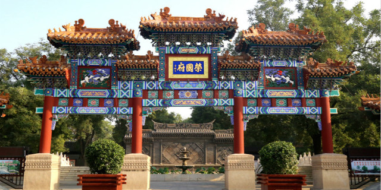
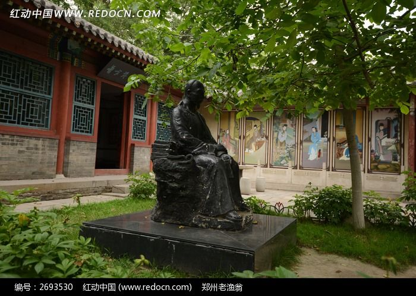
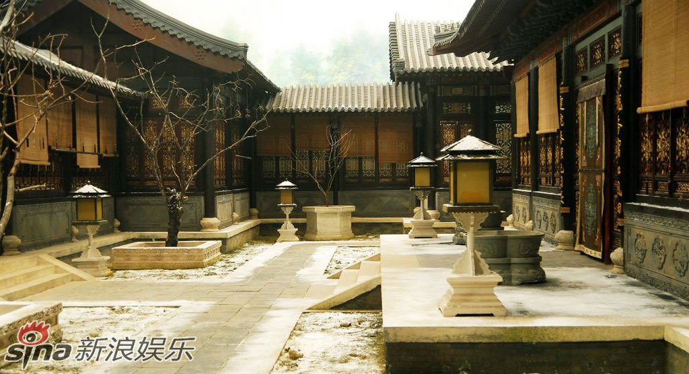
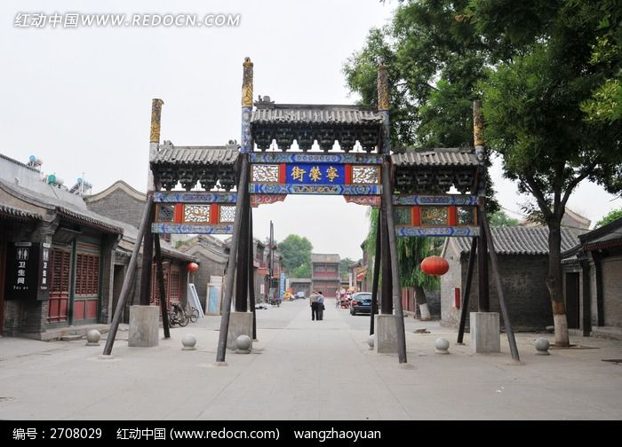

漫步荣国府，一砖一瓦皆红楼

五间正门，气势恢宏，是进入荣国府的第一道门，也是87版《红楼梦》中多次出现的经典场景。门前石狮威严，匾额高悬，尽显贾府当年"钟鸣鼎食之家"的显赫地位。

展示曹雪芹生平及《红楼梦》创作背景，馆内藏有多种珍贵版本和文献资料。走进这里，仿佛能触摸到那位"披阅十载、增删五次"的伟大作家的灵魂。

贾母居住的院落，陈设最为讲究，体现了贾府鼎盛时期的奢华生活。院内花团锦簇、雕梁画栋，是府中最尊贵的长辈居所，也是众多重要情节的发源地。

全长200余米，再现了《红楼梦》中宁国府和荣国府门前的繁华街市景象。街道两旁店铺林立、旗幡招展，让人仿佛穿越回那个"鲜花着锦、烈火烹油"的盛世时光。